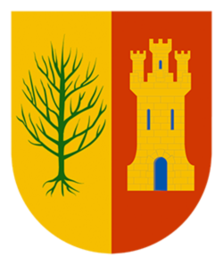

Estudios

U-tad. (Desarrollo de aplicaciones multiplataforma. FPII)
Septiembre 2018 - Actualmente.
En la universidad estoy aprendiendo a desarrollar aplicaciones, tanto móviles como para windows, páginas web, video-juegos, SCV, programación en JAVA, así como, sistemas informáticos y bases de datos SQL y PHP.

Colegio Retamar (Gestión administrativa FPI)
Septiembre de 2010 - Diciembre de 2011
Con una calificacón media de 8. Superé el curso con gran éxito y una muy buena evaluación en mis prácticas. Aprendí mucho sobre el mundo empresarial, RRHH, contabilidad, fiscalidad, relaciones laborales, derecho y más.
Como mi primer trabajo web, realicé, junto a mi compañero Alvaro Beneyto, una pagina web que estaba ambientada en los "eSports", llamada: PatchNotes en el Gif inferior podeis ver el aspecto del index, y pinchando en el gif, podeis visitar la Web.